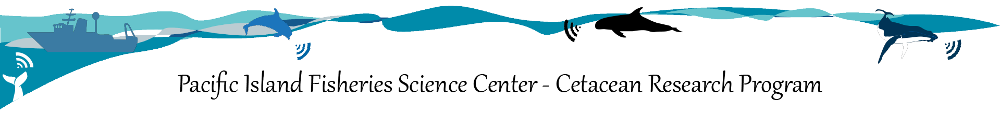

Google Cloud Platform (GCP) Data Upload

Google Cloud Platform Bulk Upload Overview
Instructions for bulk upload of PIFSC acoustic data files to GCP (Google Cloud Platform) using gsutils.
For more detail on this overall effort see the PAM-Cloud Cloud Storage page.
Install GoogleCloudSDK using Windows Powershell
Install using Windows Powershell. Paste in the below two commands and hit Enter. Use all defaults during installation. First time it runs it should ask you to login with NOAA Google account. When prompted to select the could project, choose ggn-nmfs-pamdata-prod-1.
Run this:
(New-Object Net.WebClient).DownloadFile("https://dl.google.com/dl/cloudsdk/channels/rapid/GoogleCloudSDKInstaller.exe", "$env:Temp\GoogleCloudSDKInstaller.exe")
& $env:Temp\GoogleCloudSDKInstaller.exeManually upload a folder
Use the below command to copy an entire folder. This will upload everything regardless if it is already present on the cloud and will upload contents of all subdirectories.
gsutil -m cp -c -r <localsource> <cloudfolder>
Example:
gsutil -m cp -c -r \\PICCRPNAS\CRP4\glider_MHI_spring_2022\sg680_MHI_Apr2022\recordings\wav gs://pifsc-1/glider/sg680_MHI_Apr2022/recordings/wav- The
-mflag will use multi-threading/multi-processing to process multiple files at once to speed things up. But a command using-mcannot be exited out of usingCtrl + C - The
cpargument will copy all files from the local location to the could regardless if they are already present on the cloud - The
-cflag is forcpand means that the copying will continue if an error occurs - The
-rflag is for recursive meaning it will operate on folders (rather than a single file) and will include any subfolders
Include a log file
Optionally, a log file can be created and saved:
gsutil -m cp -c -r -l <logfile> <localsource> <cloudfolder>
- the
-lflag outputs a log to the location at<logfile>. Enter the full path and desired logfile name such asC:\users\user.name\desktop\log_file.txt
If an existing log file is loaded as <logfile>, gsutils will compare the contents of the cloud folder with the files listed in the log file and skip any files that have already been uploaded. It will append new uploads to the specified log file.
Manually sync a folder
Use the below command to sync an entire folder. This is different than copying because it will check what files are already present and only uploads new or changed files (without a log). NOTE it will also delete files on the cloud that no longer exist on the local drive.
Change <localsource> to the path to the local files and <cloudfolder> to the GPC location. If that folder doesn’t yet exist on the cloud it will be created.
gsutil -m rsync -d -r <localsource> <cloudfolder>
Example:
gsutil -m rsync -d -r \\PICCRPNAS\CRP4\glider_MHI_spring_2022\sg680_MHI_Apr2022\recordings\wav gs://pifsc-1/glider/sg680_MHI_Apr2022/recordings/wav- The
-mflag will use multi-threading/multi-processing to process multiple files at once to speed things up. But a command using-mcannot be exited out of usingCtrl + C - The
rsyncargument will sync files across the local and cloud folders so will check what is on each first and only copy what is new/updated (it checks modification times) - The
-dflag is forrsyncand means it will delete files from the cloud that aren’t on the source location any more. Be careful with this because you could accidentally delete stuff if local/cloud get switched!! (can use-nflag to do a ‘dry run’ to be safe) - The
-rflag is for recursive meaning it will operate on folders (rather than a single file) and will include any subfolders
Note
Earlier versions of this included - The -o GSUtil:parallel_composite_upload_threshold=100M after the -m flag which first overrides a config setting temporarily and then sets up parallel composite uploads for files larger than 100 MB, meaning it will split the file into chunks and upload the chunks in parallel to go faster. This works fine but there is a warning about this flag that the person downloading will need to recompile and later when trying to rsync without the parallel step it actually has to re-do the process.
Bulk upload via R script
Use one of the PIFSC-specific R scripts to batch upload ALL THE DATA!
Functions and dependencies
These scripts/functions require the here and openxlsx R packages. Make sure those are installed before running for the first time. This only has to be done once.
install.packages("here")
install.packages("openxlsx")All CRP-specific scripts and functions are in the CRPTools GitHub repo in the GCP folder.
General functions are defined in the GCP_functions.r file and the two HARP specific functions are GCP_initial_upload_HARP.r and GCP_check_HARP.r. The run scripts will source these functions at the start of the script. Alternatively, manually source them using source(<function_file_name). The full path to the function file will need to be defined e.g., C:\users\user.name\github\CRPTools\GCP\GCP_functions.r or use the here() package.
Generic bulk upload: GCP_generic_upload.r
Basic/generic script for uploading a single folder with no checks for weekend/night
- The user must define the path to the local folder and the path to the cloud bucket and choose the method (either
cpfor a full copy orrsyncto sync only new/changed files) - It will copy recursively so will include any subdirectories and will copy all file types
cpmethod will also create a log file (to be saved where the user specifies)rsyncmethod will not delete files from the cloud if they are no longer in the local folder, but this can be changed with a-dflag.
HARP bulk upload: run_GCP_upload_HARPs.r
HARP-specific script that should be used to upload single frequency/site combinations of HARP data. It will loop through all deployments and disks for that site and copy to GCP preserving the server’s folder structure. It includes an initial upload step and a checking step.
- Specify the broad target cloud location (e.g.,
pifsc-1/bottom_mounted/HARP), the local server drive (e.g.,\\piccrp4nas\indopctus), the sampling frequency (e.g.,'200kHz'), and the location (e.g.,'Wake') - Set
offHoursCopytoTRUEto check that it is night or weekend upload of each disk. This will limit a single upload to no more than ~1.5 TB/8 hours and not start any new 8-hour processes during the workday - This uses the
cpmethod so all files are copied regardless of what is already on the server- It is possible to re-run using an old log and it will only upload the items that did not properly upload originally. This is pretty fast!
- A log is created and appended to as it loops through each deployment and disk and at the end the log is ‘cleaned up’ and saved as a more readable xlsx file that identifies any errors
GCP_HARP_upload.r provides a HARP-specific script for uploading batches of HARP data.
- The user specifies the broad target cloud location (e.g.,
pifsc-1/bottom_mounted/HARP), the local server drive, the sampling frequency, and the location (e.g., 200 kHz, Wake) and the code will loop through all deployments and disks for that site and copy to GCP using the same folder structure - A check for nights and weekends will occur before running each disk, hopefully limiting a single upload to no more than ~1.5 TB/8 hours and not starting any new 8-hour processes during the workday
- This uses the
cpmethod so all files are copied regardless of what is already on the server- It may be possible to re-run using an old log and it will only upload the items that did not properly upload originally. This needs more investigation
- A log is created and appended to as it loops through each deployment and disk and at the end the log is ‘cleaned up’ and saved as a more readable xlsx file that identifies any errors